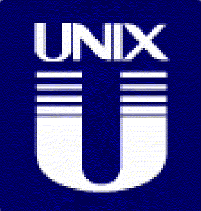

Sobre AmayaOS
¿Qué es AmayaOS?
AmayaOS es un sistema operativo similar a UNIX que es software libre y respeta tu libertad. Puedes instalar AmayaOS en tu ordenador sin temor alguno (¡Es 100% software libre!). El proyecto AmayaOS se inció en 2014 para hacer un nuevo sistema operativo para los pc x86 de 32 bits.

AmayaOS no es GNULinux
AmayaOS no es un derivado de Linux, ni de GNU, ni siquiera es una distro GNULinux, AmayaOS es un sistema operativo con desarrollo independiente basado en FreeNOS (Free Niek's Operating System)

AmayaOS sigue la filosofía UNIX®
“Escribe programas que hagan una cosa y la hagan bien, que trabajen en armonía con otros y que manejen flujos de texto, pues esta es una interfaz universal.” – Doug Mcllroy

¿Cuáles son los fines del proyecto?
Crear un sistema operativo capaz de correr fluido con tan solo 16 MegaBytes de memoria RAM.
¿Qué es el software libre?
El software libre es aquel que cumple con las 4 libertades de la filosofía del software libre, y estas libertades permiten a los usuarios tener el control de su informática, tanto individual como colectiva. Las cuatro libertades son:
- La libertad de ejecutar el programa como se desea, con cualquier propósito (libertad 0).
- La libertad de estudiar cómo funciona el programa, y cambiarlo para que haga lo que usted quiera (libertad 1). El acceso al código fuente es una condición necesaria para ello.
- La libertad de redistribuir copias para ayudar a su prójimo (libertad 2).
- La libertad de distribuir copias de sus versiones modificadas a terceros (libertad 3). Esto le permite ofrecer a toda la comunidad la oportunidad de beneficiarse de las modificaciones. El acceso al código fuente es una condición necesaria para ello.
¿Qué licencia utiliza AmayaOS?
AmayaOS se encuentra licenciado bajo la GNU General Public License (Licencia de Público General) versión 3, la cual garantiza al usuario las 4 libertades.

¿Cómo puedo ejecutar AmayaOS?
AmayaOS puede ser ejecutado desde un medio extraíble, como un CD/DVD o USB, o puede ser instalado en el disco duro.
• LiveCD
¿Dónde puedo encontrar el código fuente?
AmayaOS tiene un servidor Git propio lo que permite tener acceso a su código fuente más moderno y al que está en desarrollo.
Puedes leerlo, descargarlo, compartirlo y cambiarlo.
git.amayaos.com